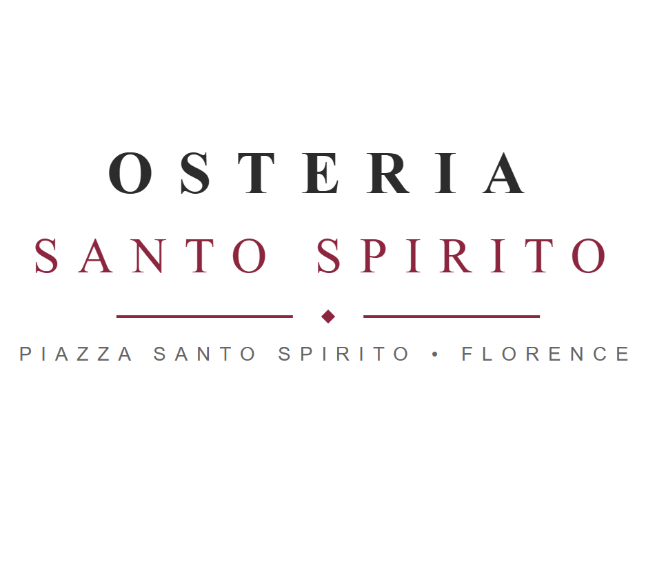

Pizzeria Brandi
Historic Neapolitan pizzeria famous for crafting traditional wood-fired pizzas using local ingredients.
Visit WebsiteBrowse through our collection of recommended places or filter by category:
Historic Neapolitan pizzeria famous for crafting traditional wood-fired pizzas using local ingredients.
Visit WebsiteAuthentic Roman trattoria serving iconic classics like Carbonara, Cacio e Pepe and Amatriciana.
Visit Website
Warm Tuscan restaurant renowned for handmade gnocchi, fresh pasta and regional wines.
Visit Website| Restaurant | City | Specialty |
|---|---|---|
| Pizzeria Brandi | Naples | Pizza Margherita |
| Trattoria da Enzo | Rome | Pasta |
| Osteria Santo Spirito | Florence | Tuscan Gnocchi |